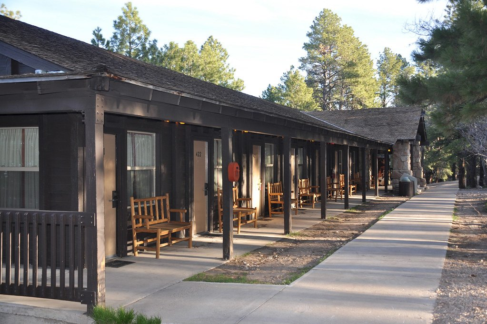
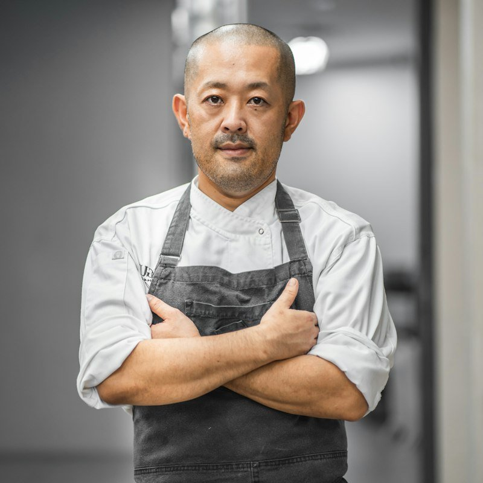

HomeAbout · Est. 2019
Our Table Has a Story.
Hospitality as neighbourliness — seasonal cooking, local relationships, room for everyone.


Since 2019

Fictional / Demo Chef Profile
Chef Elena Morgan
“Seasonal cooking is about listening to the ingredients.”
Elena (a fictional demo chef) trained in farm kitchens across the valley before opening Hearth & Harvest’s hearth. Her favourite autumn ingredient: Delicata squash — “sweet, forgiving, and it loves brown butter.”
Guests Say (demo)
“A beautiful evening from the first bite to the final course.”
“The seasonal menu made every visit feel completely different.”
“The supper club felt like dinner, a gathering, and a story all at once.”
60 mi
Sourcing radius
14
Partner growers
4
Menus a year
10
Hands on the team
Rooted over time (demo)
2019
Orchard pop-ups
One table, twelve chairs, whatever ripened.
2021
The green door
14 Orchard Lane opens Tue–Sun.
2024
Supper club
Communal Fri & Sat evenings begin.
2026
14 partners
Sixty-mile larder, four menus a year.

A small, steady team
Six in the kitchen, four on the floor — most here since the pop-up years (demo).

How We Work
From soil to plate
Four quiet habits behind every menu — no fuss, just relationships and fire.
01 · Source
Picked at peak
Morning calls with 14 growers within 60 miles — we cook what arrives best.
02 · Hearth
Cooked over fire
Wood oven, fermentation and slow technique — flavour first, waste little.
03 · Share
Served together
Communal suppers Fri & Sat, quiet dining-room corners Tue–Sun.
04 · Sustain
Nothing wasted
Roots-to-stems cooking, compost back to Green Valley, preserves for winter.
Good to know
Neighbourly answers before you book.
Almost — produce, dairy and catch come from within 60 miles. Spices, citrus and coffee travel further, and we say so on the menu.
Yes — vegetarian, vegan and gluten-free every night. Note needs at booking and the kitchen adapts each course.
Supper club is communal, set-menu, Fri & Sat. Dining room is à la carte and quiet corners, Tue–Sun.
A fictional demo chef for this concept — farm-kitchen trained, wood-fire devoted, Delicata squash loyalist.
Come sit with us
Tue–Sun · 14 Orchard Lane · Supper Club Fri & Sat.